Harjoitus 1: Vektoriaineistojen visualisointi
Harjoituksen sisältö
Harjoituksessa avataan QGIS ja tuodaan kurssilla käytettävät aineistot ohjelmistoon. Tämän jälkeen aineistoja visualisoidaan esimerkkikuvan mukaisesti.
Harjoituksen tavoite
Koulutettava oppii tuomaan GeoPackage-muodossa olevia aineistoja QGISiin ja visualisoimaan piste-, viiva- ja polygonikohteita.
Kurssimateriaalin lataus
Kurssilla tarvittavat paikkatieto-aineistot on ladattavissa Google Drivestä linkistä
Valmistautuminen
Avaa uusi QGIS-projekti (Projekti > Uusi) ja tallenna se nimellä QGIS-harjoitus 1. Lisää projektiin seuraavat aineistot:
- …kurssihakemisto/Kartat_ja_taitot.gpkg
Aineiston tuonti ja järjestely
Kurssimateriaali on koottu yhteen GeoPackageen, joka tuodaan QGISiin. Avaa Tietolähteiden hallinta -> Vektori -> Etsi lataamasi Kartat_ja_taitot.gpkg ja Lisää. Valitse kaikki tasot ja paina vielä Lisää.
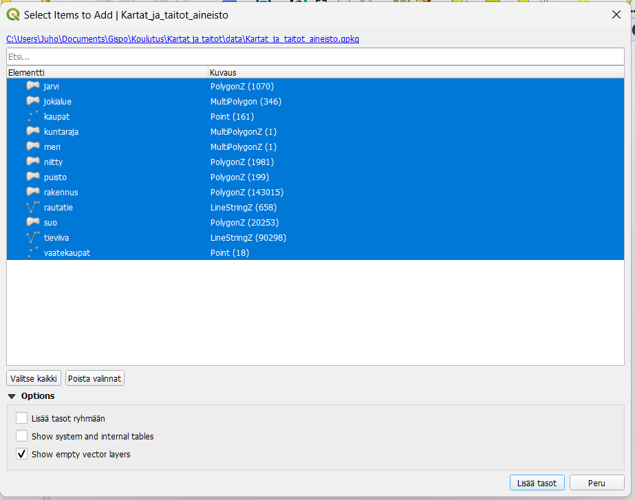
Aineisto sisältää piste- viiva- ja polygonikohteita, Voit tutkia
minkälaisia tasoja GeoPackagessa on. Helpottaaksemme käsittelyä voimme
jakaa kunkin aineistotyypin eri kansioihin. Luo piste-, viiva- ja
polygonikohteille omat kansionsa painamalla  Tasot-paneelin yläreunasta. Nimeä tasoryhmä lisäämisvaiheessa kun se on
aktiivinen, tai klikkaamalla tasoryhmää tasoluettelossa hiiren oikealla
ja valitsemalla “Nimeä ryhmä”. Kun olet luonut kolme uutta kansiota,
raahaa pistekohteet omaan kansioonsa, polygonit omaansa ja viivat
omaansa. Näin saadaan aineisto järkevästi järjesteltyä. Jos kaikki
kohteet eivät näy kunnolla, vaihda tasojen paikkaa raahaamalla
esimerkiksi pistetasot polygonien yläpuolelle. QGIS visualisoi kohteet
sen mukaan, miten ne ovat tasoluettelossa, eli ylimpänä olevat tasot
ovat päällimmäisenä.
Tasot-paneelin yläreunasta. Nimeä tasoryhmä lisäämisvaiheessa kun se on
aktiivinen, tai klikkaamalla tasoryhmää tasoluettelossa hiiren oikealla
ja valitsemalla “Nimeä ryhmä”. Kun olet luonut kolme uutta kansiota,
raahaa pistekohteet omaan kansioonsa, polygonit omaansa ja viivat
omaansa. Näin saadaan aineisto järkevästi järjesteltyä. Jos kaikki
kohteet eivät näy kunnolla, vaihda tasojen paikkaa raahaamalla
esimerkiksi pistetasot polygonien yläpuolelle. QGIS visualisoi kohteet
sen mukaan, miten ne ovat tasoluettelossa, eli ylimpänä olevat tasot
ovat päällimmäisenä.
Tasojen visualisointi
Kun tuot uuden vektoriaineiston QGISiin, ohjelma arpoo satunnaiset värit kaikille kohteille. Visualisoidaan karttakohteita järkevämmän näköiseksi karttakokonaisuudeksi.
Esimerkkikuva lopputuloksesta:

Polygonien visualisointi
Avaa Tason tyylit -paneeli menemällä Näytä > Paneelit > Tason tyylit. QGISiin avautuu uusi sivupalkki, jossa voit valita tason yläreunasta ja muuttaa sen kuvaustekniikkaa.
Aloitetaan kuvaustekniikan muokkaaminen suurista polygoneista. Valitse esimerkiksi meri-taso ensimmäiseksi Tason tyylit-paneelista. Saat edistyneet visualisointityökalut auki painamalla Yksinkertainen täyttö -kohtaa:

Täältä saat muokattua tarkemmin polygonin väriä ja täyttötyyppiä sekä ulkoviivan väriä ja ominaisuuksia. Värivalintaa painamalla saat laitettua myös valmiin HTML-koodin valitsimeksi. Vaihda tason täyttöväri ja viivan väri itsellesi mieluisiksi.
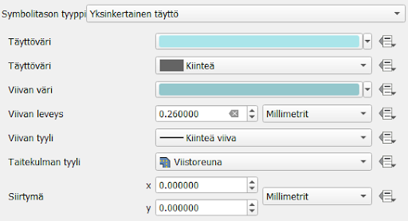
Alla on esimerkkinä mitä värejä harjoituksen esimerkkikuvassa on käytetty. Voit testata myös eri värejä ja katsoa, miten ne toimivat kartallasi. Älä visualisoi rakennuksia vielä.
Esimerkkikuvan värit
Meri: täyttöväri: #aae5ea reunaviiva: #94c7cc
Kuntaraja: täyttöväri: #dcecbd reunaviiva: #000000
Rakennus: täyttöväri: #a2875d reunaviiva: #60564b
Puisto: täyttöväri: #a7b882 ei reunaviivaa
Niitty: täyttöväri: #fedc8b reunaviiva: #888888
Järvi: täyttöväri: #aae5ea reunaviiva: #94c7cc
Sääntöpohjainen visualisointi
Viivakohteet voivat olla päällekkäisiä tasoja muiden tyyppisten tasojen päällä. Aineistossa tiet ja rakennukset menevät usein päällekkäin eivätkä toimi kaikilla mittakaavatasoilla sujuvasti yhteen. Tehdään siis ensiksi rakennus-polygonitasolle siis sääntöpohjainen visualisointi.
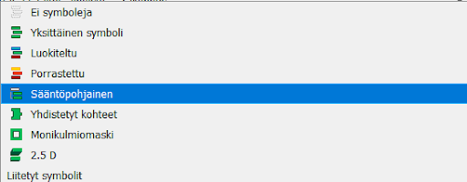
Tasolla on oletuksena yksi sääntö, tuplaklikkaa sitä muokataksesi sitä.

Tarkoituksena on luoda sääntö, jonka perusteella QGIS näyttää rakennukset vain 1 : 10 000 -mittakaavassa ja sitä tarkemmissa mittakaavatasoissa. Haluamme valita visualisointiin kaikki talot, joten valitse suodattimeksi “Else”. Suodatuksen lisävalintoihin pääsemme tieaineiston parissa. Nyt meille riittää, että laitamme täpän Scale range -kohtaan ja täytämme pienimmäksi mittakaavaksi 1:10 000 ja suurimmaksi 1:1. Tämä mittakaava on se, jolla monia opaskarttoja tarkastellaan.
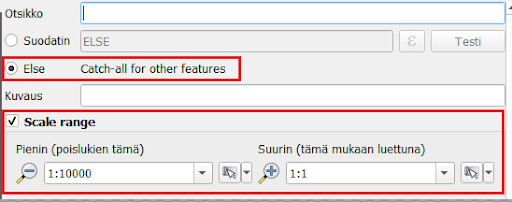
Nyt kun muutat QGISin näkymässä kartan mittakaavaa (käyttämällä vaikkapa hiiren rullaa tai kannettavan tietokoneen hiiren lähennystä ja loitonnusta), huomaat että rakennukset tulevat näkyviin ja katoavat mittakaavatason mukaan.
Tieaineisto
Tieviiva-aineisto sisältää erityyppisiä teitä. Avaa aineiston attribuuttitaulukko ja tarkastele mitä se sisältää. Kohdeluokka-sarakkeessa on luokiteltu tiet seitsemään eri luokkaan. Kartoissa on kuitenkin usein neljä eri luokkaa tietyypeille, joten käytetään samaa luokittelua.
Tässä harjoituksessa käytetyt kohdeluokat perustuvat Maanmittauslaitoksen luokitukseen Autotie Ia (12111), Autotie Ib (12112), Autotie IIa (12121), Autotie IIb (12122), Autotie IIIa (12131), Autotie IIIb (12132), Ajotie (12141). Tarkemmat tiedot aineistosta löytyvät: https://www.maanmittauslaitos.fi/sites/maanmittauslaitos.fi/files/attachments/2023/06/Maastotietokohteet_2023_05.pdf
Jotta saamme luotua mittakaavaperusteisen näkyvyyden aineistolle ja tehtyä eri luokille omat visualisointinsa, valitse tieviiva-aineistolle sääntöpohjainen visualisointi. Tee uusi sääntö paneelin vasemmasta alareunasta -painikkeesta. Tästä tulee luokka 1.
Lisää suodatin, scale range sekä kaksi visualisointitasoa kohteelle:
Otsikko: Luokka 1
Suodatin: "kohdeluokka" = 12111 OR "kohdeluokka" =12112
Scale range: 1:100000000, 1:1
Valitse aineistolle ensin yksi yksinkertainen täyttö, jossa on haluamasi väri. Sen jälkeen paina -painiketta ja lisää toiseksi väriksi musta.
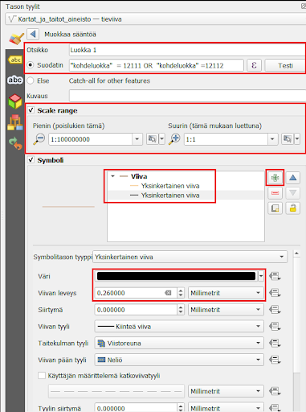
Jotta saat mustan värin reunaviivaksi ja valitsemasi värin pysymään tien päävärinä, aseta musta väri alimmaiseksi painamalla 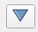 -painiketta ja asettamalla mustan viivan paksuus täyttöväriä isommaksi.
Esimerkkikuvan asetukset luokalle 1 olivat:
Viiva 1 (sisus): täyttöväri: #f1a342 paksuus: 2,2 mm
Viiva 2 (reuna): täyttöväri: #000000 paksuus: 2,6 mm
Tee lopuille kolmelle luokalle samalla tavalla sääntöpohjainen luokittelu ja mittakaavaperusteinen näkyvyys näillä arvoilla:
Luokka 2 “kohdeluokka” =12121 OR “kohdeluokka” =12122
Scale range: 1:20001, 1:1
Viiva 1: täyttöväri: #f7e27c paksuus: 2,8 mm
Viiva 2: täyttöväri: #000000 paksuus: 3,1 mm
Luokka 3 “kohdeluokka” = 12131 OR “kohdeluokka” = 12132
Scale range: 1:10001, 1:1
Viiva 1: täyttöväri: #ffffff paksuus: 1,2
Viiva 2: täyttöväri: #7e7a7a paksuus 1,6
Luokka 4 “kohdeluokka” = 12141
Scale range: 1:10 001, 1:1
Viiva 1: täyttöväri: #ffffff paksuus: 1,2
Viiva 2: täyttöväri: #a4a9a2 paksuus: 1,8 Viivan tyyli: pisteviiva
Nyt tiet ovat muuten valmiita, mutta monissa kohdin reunaviivat näyttävät menevän väärin. Muutetaan siis vielä teiden piirtojärjestys, jotta reunaviivat menevät piiloon. Paina “symbolitasot”:

Määrittele järjestys kuvan mukaisesti klikkaamalla värin kenttää ja kirjoittamalla siihen (musta jää 0:ksi, muut värit muutetaan arvoon 1):

Nyt reunaviivat on saatu piiloon. Seuraavaksi vielä asetetaan teiden keskinäinen piirtojärjestys niin, että päätiet piirtyvät pikkuteiden päälle. Klikkaa alalaidasta “Tason piirto” -kohtaa ja laita täppä “Säädä kohteiden piirtojärjestystä” -kohtaan. Tämän jälkeen paina sen vieressä olevaa symbolia avataksesi lisäasetukset.
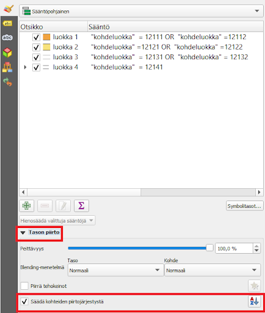 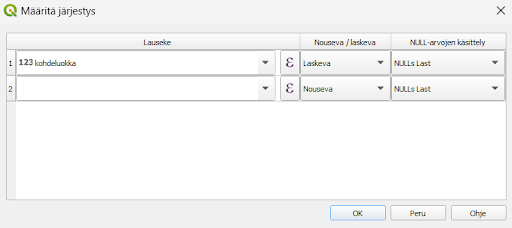
Aseta arvot kuten kuvassa (Lauseke: kohdeluokka, Nouseva/laskeva: Laskeva). Nyt QGIS järjestää kohteet kohdeluokka-sarakkeen arvojen mukaan niin, että isoimman arvon omistavat kohteet tulevat päällimmäisiksi. Paina OK.
Rautatie
QGISissä on myös valmiita visualisointeja, jotka näkyvät visualisointiasetusten alkunäkymässä. Katso symbolikirjaston suosikeista, miltä näyttäisivät vaikkapa “topo railway” tai “topo steps”. Saat visualisoinnit käyttöön klikkaamalla niitä.
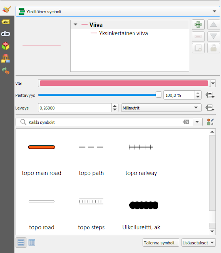
Voit myös ottaa jonkin valmiin symbolin visualisointisi pohjaksi, jota alat editoimaan. Esimerkiksi “topo stepsin” alle voit lisätä alle vaaleanharmaan yhtenäisen viivan samaan tapaan kuin teissä lisättiin musta reunaviiva päävärin alle. Lopputulos näyttää silloin tältä:
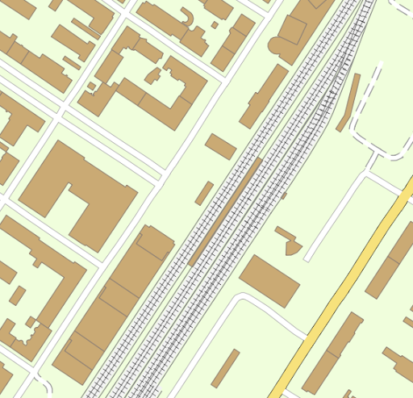
Pistekohteet
Harjoitusaineistossa on kaksi pistekohdetta, kaupat ja vaatekaupat. Emme visualisoi kaupat-tasoa, joten jätä se pois näkyvistä. Avaa sen sijaan vaatekaupat-taso editoitavaksi Tason tyylit -paneeliin.
Klikkaa “Yksinkertainen pistesymboli” -kohtaa avataksesi edistyneet visualisointitoiminnot. Valitse Symbolitason tyyppi -pudotusvalikosta “SVG-symbolitaso”.

Nyt voit valita pisteen sijasta jonkin muun symbolin vaatekaupoille. Selaa eri kansioita ja hae mielestäsi hyvä symboli. Valitse haluamasi symboli klikkaamalla sitä SVG-kuvat-ikkunassa.
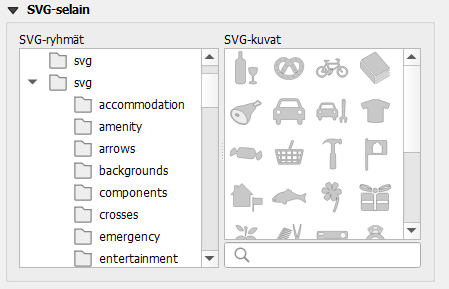
Kuvake ei näy vielä välttämättä kovin hyvin, joten muuta sen kokoa niin, että se erottuu helposti. Vaihda sille myös uusi täyttöväri halutessasi.
Kun olet valmis, tallenna projektitiedosto kurssihakemistoon pikanäppäimellä CTRL + S tai päävalikosta Projekti > Tallenna.
Lisätehtävä
Palaa polygonitasoihin ja valitse suot-taso. Luo tasolle toinen visualisointitaso painamalla .
Tee alemmasta tasosta hieman läpinäkyvä säätämällä sen täyttövärin peittävyyttä väriasetuksista 55 prosenttiin.
täyttöväri:: #0f7c79 täyttövärin läpinäkyvyys 55% reunaviiva: #000000
Sen jälkeen vaihda päällimmäisen symbolitason tyypiksi Täyttö viivakuosilla. Vaihda jaottelu täytön kohdalta ja viivan väri ja leveys avaamalla viivatason edistyneet visualisointiominaisuudet
viivakuosi jaottelu 2,400000 viivan leveys 0,10000 viivan väri #335175
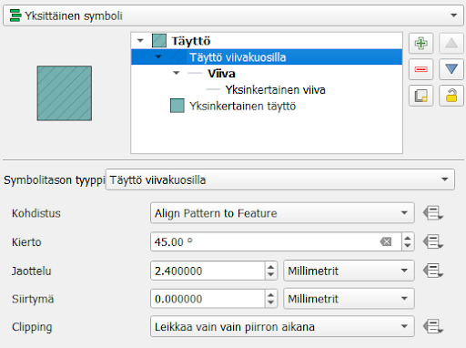
Voit halutessasi visualisoida myös puistot niin, että lisäät täytön pistekuviolla yksinkertaisen täytön lisäksi. Pistekohteeksi voit puolestaan valita SVG-ikonin, esimerkiksi puun. Nyt puistoalueissa on vihreä tausta ja vihreitä pieniä puita.

Psst! Muista tallentaa QGIS-projekti harjoituksen lopuksi.